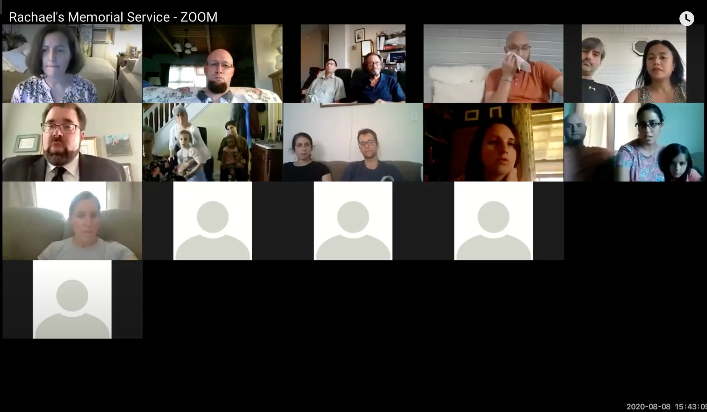
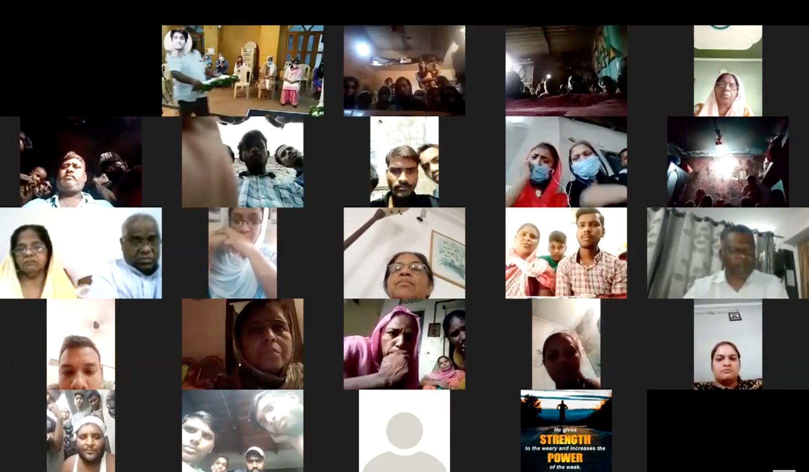
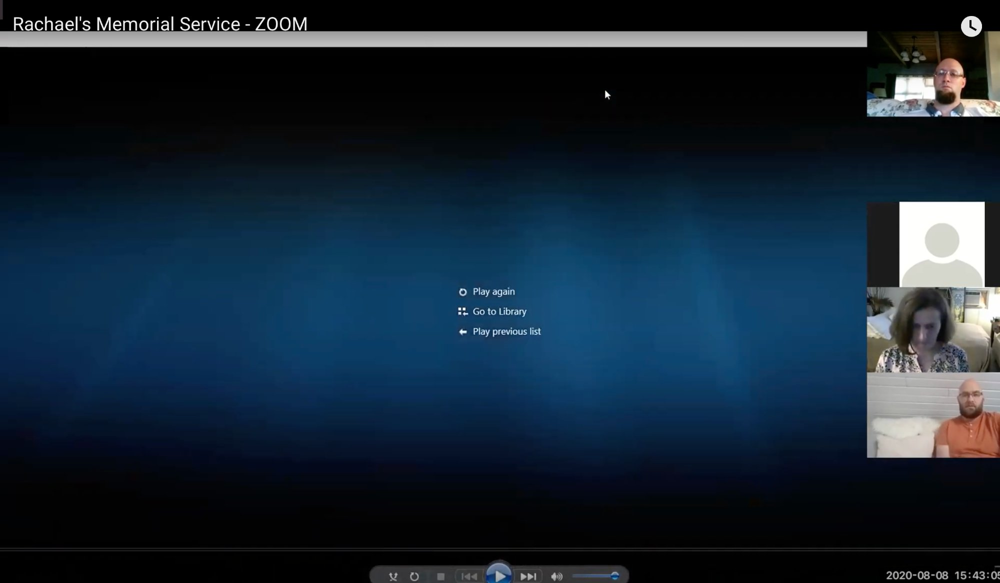

NSF FUNDED RESEARCH · GEORGE WASHINGTON UNIVERSITY · RITUALS IN THE MAKING
During COVID-19, millions of people held funerals, memorials, and grief rituals on video platforms never designed for any of it. Families were troubleshooting tech while grieving. I managed a multi-method research program to understand what made virtual ceremonies feel meaningful and what got in the way. What we found challenged how platforms were framing the problem: users didn't want more flexibility. They wanted structure, presence, and less to figure out.
Why This Research Matters for Product Work
Every product eventually gets used in a moment that matters more than the product team planned for. Zoom was built for meetings, then millions of people used it to say goodbye to someone they loved. That is not an edge case. That is what happens when products scale: they get pulled into contexts the designers never imagined, and the stakes go up dramatically.
This research is about technology in high-stakes human situations, where the cost of bad design is emotional, social, and sometimes reputational. Funeral and memorial settings made visible product questions that matter far beyond that domain: remote coordination, low tech confidence, trust, privacy, moderation, and cultural variation.
Many products are used in moments that are not routine for users, even if they are routine for the company. A collaboration tool may be used for layoffs or crisis response. A social platform for grief or community support. A payments product during illness or death. This research taught me to look beyond happy-path use and see what people need when stakes are high, norms are shifting, and friction feels consequential. While the context was mourning, the broader lesson was how to design for care, trust, and meaningful participation in real-world settings.

The Research Context
Video platforms were built for meetings. When COVID hit, they became the default infrastructure for one of the most emotionally significant things people do: say goodbye. Platform teams knew something wasn't working, but they didn't have the research to understand what or why. The NSF-funded "Rituals in the Making" project at George Washington University, led by Dr. Sarah Wagner, set out to study how mourning practices were moving onto digital platforms.
I was hired as the Research Manager on a team of 8 researchers. The project needed someone who could build the research infrastructure from scratch: plan, recruit across culturally diverse and emotionally sensitive populations, manage multi-method data collection, and synthesize findings across very different community contexts.
My Responsibilities
My task was to design and manage the research program, while also personally conducting platform-level analysis of how Zoom's features shaped ritual participation. Specifically, I was responsible for:
- Developing the research plan, interview schedule, and discussion guides
- Managing recruitment and outreach across five faith and cultural communities (African American, Jewish, Muslim, Catholic, Hindu) across the US, Mexico, and India
- Building and maintaining the project website and digital outreach channels
- Running ideation and synthesis sessions with the team
- Personally conducting contextual heuristic evaluation of Zoom and Facebook as ritual platforms
- Observing 21 virtual funeral and memorial ceremonies as a non-participant observer, and analysing 13 recordings

Research Approach
Recruiting Across Hard-to-Reach Populations
Because this was pandemic-era research, digital outreach was essential. We used Facebook groups, community pages, our project website, and an active Twitter/X presence to create multiple entry points for participation. But digital channels were not only for recruitment. We treated them as field sites and discovery spaces. By watching online funerals and memorial events, we learned how different communities were adapting ritual practice online, understood the norms of those spaces, and identified more respectful ways to approach outreach. That made recruitment more targeted and trust-sensitive, especially across very different religious and cultural communities spanning the US, Mexico, and India.
Building Trust Before Going Deep
The first challenge was access: people needed to trust us before they'd talk about experiences that were still raw. I started with focus groups to build relationships before asking anyone to go deeper. That groundwork was what made the rest of the study possible.
The second challenge was reliability. Self-reported accounts of grief are incomplete, as people process difficult experiences differently in reflection than they did in the moment. I needed to triangulate: between what participants told me in interviews, what I could observe in recorded ceremonies, and how their perspectives shifted over time through diary studies.
How do you research something this emotionally sensitive? How do you observe grief without being intrusive, and how do you translate what you find into design decisions?
Contextual Heuristic Evaluation of Platforms
We did not run a conventional lab-style usability test of Zoom or Facebook as standalone products. Instead, I conducted a contextual, heuristic-style evaluation of how these platforms supported or constrained ritual participation.
On Zoom, I focused on features like waiting rooms and admission controls, mute/unmute for turn-taking, chat as a side channel for condolence and participation, and gallery view versus speaker view. I was especially interested in recurring moments like "Can you hear me?" or "Can you see me?" because those showed how technical uncertainty became publicly visible and part of the ritual interaction itself. Those moments were not just glitches. They revealed how people with low confidence or limited familiarity with the platform managed participation in emotionally sensitive settings. I also looked at risks like Zoom bombing and what kinds of platform safeguards were needed to protect intimate ritual spaces.
On Facebook and similar livestreamed spaces, the questions were different. I looked at one-to-many versus many-to-many participation, comments and reactions as substitutes for ritual response, how features like the Like and Love buttons carried different emotional meanings in mourning contexts, and the role of moderation in preventing unwanted intrusion.

What We Found
Users didn't want more flexibility. They wanted structure.
Platforms offered open-ended tools (screen share, breakout rooms, chat). But mourners needed guided flows, a clear beginning, middle, and end, that removed decision-making burden during an already overwhelming moment. The paradox of choice was especially acute: more features meant more things that could go wrong, and every wrong thing happened in front of an audience that was already emotionally fragile.
Presence mattered more than features.
Participants consistently described the most meaningful virtual ceremonies as ones where they could sense other people's presence, even through a screen. Gallery view, ambient audio from attendees, and visible reactions created a sense of shared space that speaker-view and muted-by-default settings actively undermined. The platform's default settings were optimised for productivity, not for being together.
"Can you hear me?" was not a glitch. It was a participation strategy.
Recurring metalinguistic moments like "Can you hear me?" or "Can you see me?" showed how technical uncertainty became publicly visible and part of the ritual interaction itself. For people with low confidence or limited familiarity with the platform, these moments were how they managed participation in emotionally sensitive settings. Designing them away would remove a coping mechanism, not fix a bug.
Cultural specificity shaped platform friction.
What counted as a "good" virtual ceremony varied dramatically across communities. Platform design choices that worked for one cultural context created friction for another. A universal interface was the wrong frame for this problem. For example, muting everyone by default works for a webinar but silences the collective prayer that makes certain rituals meaningful.
The evaluation was not about usability scores. It was about dignity.
In these settings, good design was not about ease of use in the abstract. It was about whether the platform could support dignity, participation, and care in a high-stakes social moment. Standard heuristic frameworks needed to be supplemented with criteria around emotional safety, cultural appropriateness, and coordination under uncertainty.
Outputs
- Feature-level evaluative analysis of Zoom and Facebook as ritual platforms
- Cross-platform comparison of affordances for mourning and memorial participation
- Pain point and opportunity synthesis across five cultural communities
- Contributions to the Rituals in the Making project website and public-facing research outputs
- Diary study co-design with the research team
What I Would Do Differently
I would have pushed for a more structured handoff between the qualitative platform insights and the platform teams themselves. We generated strong feature-level analysis, but because the project was academically funded, there was no built-in channel to get those findings in front of Zoom or Facebook product teams. If I ran this again, I would build that stakeholder relationship from the start, framing the research in product language from day one, so the insights could travel beyond the academic paper.
I would also have formalised the heuristic evaluation into a more portable deliverable, something like a "high-stakes context" heuristic checklist that product teams could apply to their own features. The insights were there, but the packaging could have been more actionable for a non-academic audience.